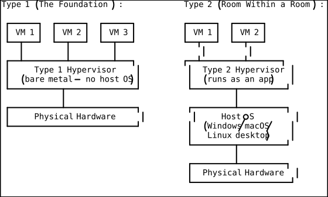
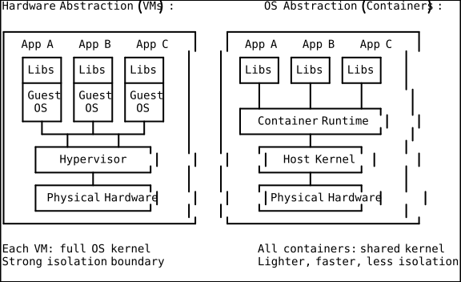
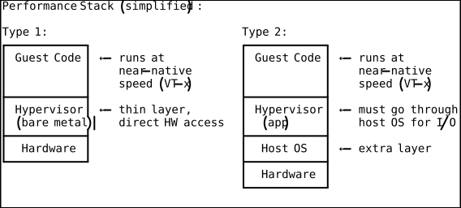
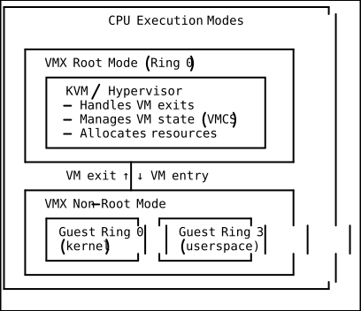
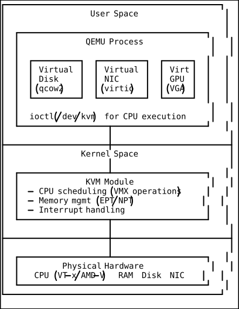
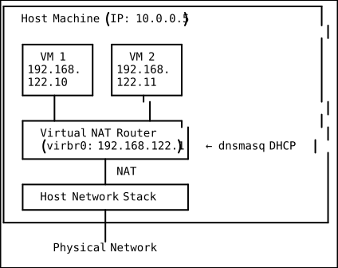
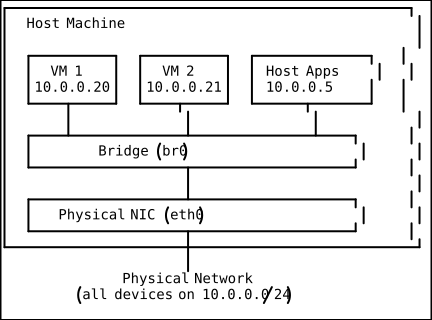
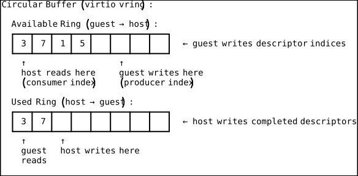
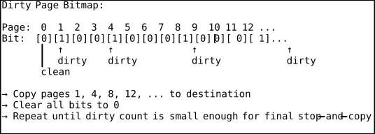

Virtual Machines & Hypervisors
This document is a comprehensive guide to virtual machines (VMs) and hypervisors — the foundational technology that makes modern cloud computing possible. It covers what VMs are and why they exist, how hypervisors abstract physical hardware, the internals of KVM/QEMU, VM networking, snapshots, live migration, cloud VM provisioning, and how VMs compare to containers. By the end, you will understand how a single physical server can host dozens of isolated “virtual computers,” how cloud providers carve up hardware into instance types, and when to choose VMs over containers (and vice versa). Targeted at engineers with basic Linux knowledge who want to understand virtualization from first principles through production use.
Table of Contents
- Why This Matters
- Mental Models
- Core Concepts
- 3.1 What a VM Is — Hardware Abstraction vs OS Abstraction
- 3.2 Type 1 vs Type 2 Hypervisors
- 3.3 How KVM Works
- 3.4 VM Components: vCPU, vRAM, vNIC, vDisk
- 3.5 Snapshots, Live Migration, and Memory Ballooning
- 3.6 VM Networking: NAT, Bridge, Host-Only
- 3.7 VMs vs Containers
- 3.8 Cloud VM Types: EC2, GCE, Azure VM
- 3.9 Provisioning: cloud-init and User-Data Scripts
- Practical Use Cases
- Worked Examples
- Common Pitfalls & Misconceptions
- Summary & Key Takeaways
- Quick Reference Cheat Sheet
- DSA Connections
- Further Reading
Why This Matters
Every time you spin up an EC2 instance, deploy a Kubernetes node, or run a GitHub Actions workflow, a virtual machine is doing the heavy lifting underneath. Virtualization is not a convenience — it is the structural foundation of modern infrastructure. Without it, cloud computing as we know it would not exist.
Before virtualization, scaling meant buying more physical servers. Each server ran one operating system and one workload. If your application used 10% of the CPU, the other 90% was wasted. If you needed isolation between two teams, you needed two separate machines. Data centers were enormous, inefficient, and expensive.
Virtualization solved this by introducing a layer of abstraction between the physical hardware and the operating system. A single physical machine could now pretend to be many machines, each running its own OS, each isolated from the others. This had three revolutionary consequences:
- Resource efficiency — multiple workloads share one physical server, driving utilization from ~10% to 60-80%.
- Isolation — a crash or security breach in one VM does not affect others on the same host.
- Agility — provisioning a new “server” went from weeks (ordering hardware, racking, cabling) to seconds (API call).
Understanding VMs and hypervisors is essential not just for cloud engineers, but for anyone who works with modern infrastructure. Containers run on top of VMs in most cloud environments. Kubernetes nodes are VMs. Your CI/CD pipelines run inside VMs. Even “serverless” functions execute inside lightweight VMs (AWS Firecracker). The abstraction is everywhere, and understanding it gives you the ability to debug performance issues, make informed architecture decisions, and reason about security boundaries.
Mental Models
Before diving into technical details, let’s establish four mental models that will serve as your conceptual scaffolding for everything that follows. Return to these whenever a later section feels abstract.
Mental Model 1: “A Computer Pretending to Be a Computer”
A virtual machine is exactly what it sounds like — a machine that is virtual. It is a software-based simulation of a complete physical computer, including its own CPU, RAM, disk, and network interface. The guest operating system running inside the VM has no idea (and no need to know) that it is not running on real hardware. As far as the guest OS is concerned, it owns the entire machine.
Think of it like a movie set. The actors (guest OS and applications) interact with what looks like a real kitchen, a real office, a real city street. But behind the facades, there is a studio (the hypervisor) managing everything. The actors perform their roles perfectly because the set is convincing enough. The studio can build multiple sets on the same soundstage, and the actors in each set never see each other.
This is full hardware simulation — the VM gets virtualized versions of every hardware component a physical machine has.
Mental Model 2: Type 1 as “Building Foundation” vs Type 2 as “Room Within a Room”
Type 1 hypervisors are like the concrete foundation and steel frame of a building. They sit directly on the physical hardware, and everything else (VMs) is built on top of them. The hypervisor IS the ground floor. There is no other operating system between the hypervisor and the hardware. Examples: VMware ESXi, Microsoft Hyper-V, Xen, KVM (when used as intended — more on this nuance later).
Type 2 hypervisors are like building a room inside an existing room. You already have an operating system (the outer room), and you install the hypervisor as a regular application within it. The hypervisor then creates VMs (inner rooms) inside the host OS. Examples: VirtualBox, VMware Workstation, Parallels Desktop.

The key insight: Type 1 has one fewer layer. That means less overhead, better performance, and tighter security — which is why production servers and cloud providers always use Type 1. Type 2 is convenient for development and testing because you don’t need to dedicate a machine to it.
Mental Model 3: Memory Ballooning as “An Inflatable Wall Inside a Room”
Imagine a room (a VM) that has been allocated a certain amount of floor space (memory). Now imagine there is an inflatable wall inside that room. When the hypervisor needs to reclaim memory for other VMs, it inflates the wall — the room’s usable space shrinks, and the guest OS is forced to swap out pages or compress data to fit in the smaller space. When the pressure eases, the wall deflates, and the room gets its space back.
The elegant part: the guest OS cooperates willingly because the balloon driver inside it is the one “inflating.” The hypervisor doesn’t forcibly rip memory away — it asks the guest’s balloon driver to claim memory from inside the guest, making that memory available back to the host.
Mental Model 4: Live Migration as “Rebuilding a Ship Plank by Plank While It’s Sailing”
Live migration moves a running VM from one physical host to another with zero (or near-zero) downtime. This sounds impossible — how do you move a running computer?
The answer is iterative memory copying. Imagine a wooden ship sailing across the ocean. You begin replacing planks one at a time, ferrying each old plank to a new hull being built alongside. Some planks you already replaced get damaged again (the VM writes to memory pages you already copied), so you copy those again. Each round, fewer planks need re-copying because the ship changes less between rounds. Eventually, you pause the ship for a fraction of a second, copy the last few planks, and redirect all traffic to the new hull. The passengers (applications) barely noticed.
Core Concepts
3.1 What a VM Is — Hardware Abstraction vs OS Abstraction
Let’s start with a concrete example before the formal definition. You have a laptop with an Intel i7 CPU, 32 GB of RAM, a 1 TB SSD, and a Wi-Fi adapter. You install a hypervisor and create a VM configured with 2 CPU cores, 4 GB of RAM, a 40 GB virtual disk, and a virtual network adapter. You install Ubuntu Server inside that VM. Ubuntu boots up, sees “2 CPUs, 4 GB RAM, 40 GB disk” and runs normally — it installs packages, runs a web server, handles network traffic. It has no idea it’s sharing the physical machine with your host OS and two other VMs.
What you just created is a virtual machine — a software-defined computer that emulates a complete hardware environment. The critical distinction is the level of abstraction:
Hardware abstraction (VMs): The hypervisor virtualizes the hardware itself — CPU, RAM, disk controllers, network interfaces, interrupt controllers, timers, everything. The guest OS sees what appears to be real hardware and runs its own full kernel. This means you can run Windows inside a VM on a Linux host, or Linux inside a VM on macOS, because each guest brings its own complete operating system stack.
OS abstraction (Containers): Containers share the host’s kernel. They only virtualize the user-space environment — filesystem, process tree, network namespace. This is lighter and faster but means you can only run Linux containers on a Linux kernel (or you need a hidden VM to provide that kernel, as Docker Desktop does on macOS/Windows).

Key insight: VMs provide stronger isolation because each has its own kernel. A kernel exploit in one VM cannot affect another VM. Containers share a kernel, so a kernel exploit can escape the container boundary.
3.2 Type 1 vs Type 2 Hypervisors
Now that you understand what a VM is, let’s examine the software that makes them possible — the hypervisor (also called a Virtual Machine Monitor or VMM).
A hypervisor has one job: multiplex physical hardware across multiple virtual machines while maintaining isolation. It allocates CPU time, partitions memory, mediates disk I/O, and virtualizes devices. How it does this — and where it sits in the software stack — defines whether it is Type 1 or Type 2.
Type 1 Hypervisors (Bare-Metal)
A Type 1 hypervisor runs directly on the physical hardware with no host operating system beneath it. It is the first software that loads after the firmware/BIOS. The hypervisor itself manages hardware resources and schedules VMs.
| Hypervisor | Vendor | Notes |
|---|---|---|
| VMware ESXi | Broadcom | Industry standard in enterprise data centers |
| Microsoft Hyper-V | Microsoft | Ships with Windows Server; also available as free “Hyper-V Server” |
| Xen | Linux Foundation | Powers much of AWS (historically); paravirtualization pioneer |
| KVM | Linux/Red Hat | Built into the Linux kernel; used by Google Cloud, DigitalOcean, and others |
KVM is a special case. Technically, KVM turns the Linux kernel itself into a Type 1 hypervisor. It is a kernel module (not a user-space application), and when loaded, Linux becomes the hypervisor. Some purists classify KVM as Type 2 because Linux was originally a general-purpose OS, but in practice it behaves as Type 1 — VMs run with hardware-assisted virtualization at near-native speeds, and the hypervisor (Linux+KVM) has direct hardware access.
Type 2 Hypervisors (Hosted)
A Type 2 hypervisor is installed as a regular application on top of an existing operating system. It relies on the host OS for hardware access, device drivers, and scheduling.
| Hypervisor | Vendor | Notes |
|---|---|---|
| Oracle VirtualBox | Oracle | Free, open-source, cross-platform |
| VMware Workstation | Broadcom | Commercial, feature-rich, Windows/Linux |
| VMware Fusion | Broadcom | macOS version of Workstation |
| Parallels Desktop | Alludo | macOS-focused, excellent Windows-on-Mac experience |
| QEMU (standalone) | Open source | Full emulation — can emulate different CPU architectures |
Performance Comparison
Type 1 hypervisors typically achieve 95-99% of native hardware performance because they use hardware-assisted virtualization (VT-x/AMD-V) with minimal software overhead. Type 2 hypervisors add the overhead of the host OS layer, typically achieving 85-95% of native performance for CPU-bound workloads, with more significant overhead for I/O-intensive workloads.

3.3 How KVM Works
KVM (Kernel-based Virtual Machine) is the hypervisor that powers most of the modern cloud. Let’s trace how it works from the hardware up.
Hardware Extensions: Intel VT-x and AMD-V
Before 2005, virtualizing x86 was painful. The x86 instruction set has 17 “sensitive but non-privileged” instructions that behave differently in kernel mode vs user mode but don’t trap when executed in user mode. This means a hypervisor couldn’t simply run guest code and intercept privileged operations — some operations would silently do the wrong thing.
Intel VT-x (codenamed Vanderpool) and AMD-V (codenamed Pacifica) solved this by adding a new CPU mode — VMX root mode for the hypervisor and VMX non-root mode for guests. When a guest executes a sensitive instruction in non-root mode, the CPU automatically traps to the hypervisor (a VM exit). The hypervisor handles the operation and resumes the guest (a VM entry). This is called hardware-assisted virtualization.

Each VM has a VMCS (Virtual Machine Control Structure) — a hardware data structure that stores the VM’s state (registers, control fields, exit reasons). On a VM exit, the CPU saves the guest state into the VMCS and loads the hypervisor state. On VM entry, the reverse happens. This context switch is fast (typically under 1 microsecond on modern hardware).
KVM + QEMU Architecture
KVM itself is a kernel module (kvm.ko plus architecture-specific modules like kvm-intel.ko or kvm-amd.ko). It handles CPU virtualization and memory management but does NOT emulate devices (disk, network, display, USB). That job belongs to QEMU.
QEMU (Quick Emulator) is a user-space program that provides device emulation. When you launch a VM, QEMU creates the virtual hardware environment — disk controllers, network cards, VGA display, USB hubs — and delegates CPU execution to KVM via the /dev/kvm device.

Virtio Drivers
By default, QEMU emulates real hardware (e.g., an Intel e1000 network card or an IDE disk controller). The guest OS uses its existing drivers for these devices, which is convenient but slow — every I/O operation goes through the full emulation layer.
Virtio is a paravirtualized I/O framework that sidesteps this. Instead of pretending to be a real device, virtio defines a simple, efficient interface that both the host and guest agree to use. The guest installs virtio drivers (included in the Linux kernel and available for Windows), and I/O operations pass through a shared-memory ring buffer with minimal overhead.
Common virtio devices:
virtio-blk/virtio-scsi— block storage (disk)virtio-net— network interfacevirtio-balloon— memory ballooning (dynamic memory management)virtio-gpu— graphicsvirtio-serial— serial/console communication
Performance difference: virtio-net typically achieves 2-5x higher throughput than emulated e1000, with significantly lower CPU overhead.
3.4 VM Components: vCPU, vRAM, vNIC, vDisk
Every VM is defined by its virtual hardware configuration. Let’s examine each component.
vCPU (Virtual CPU)
A vCPU is a virtualized CPU core presented to the guest. The hypervisor schedules vCPUs onto physical CPU cores (pCPUs). Key concepts:
- Overcommit: You can assign more total vCPUs across all VMs than you have physical cores. The hypervisor time-slices, similar to how an OS schedules processes. Moderate overcommit (2:1 or 3:1) works well for bursty workloads; heavy overcommit causes scheduling latency.
- Pinning: You can pin a vCPU to a specific pCPU, eliminating scheduling jitter. Critical for latency-sensitive workloads (real-time, databases).
- NUMA awareness: On multi-socket servers, the hypervisor should schedule a VM’s vCPUs on the same NUMA node as its memory to avoid cross-socket memory access penalties.
vRAM (Virtual RAM)
Memory assigned to a VM. From the guest’s perspective, it has a contiguous block of physical RAM. In reality, the hypervisor translates guest physical addresses to host physical addresses using hardware support:
- EPT (Extended Page Tables — Intel) / NPT (Nested Page Tables — AMD): A second level of address translation done in hardware. The guest maintains its own page tables (virtual → guest physical), and the CPU automatically translates guest physical → host physical via EPT/NPT. No hypervisor intervention needed for most memory accesses.
vNIC (Virtual Network Interface Card)
A virtual network adapter presented to the guest. The VM sees it as a real Ethernet interface. Behind the scenes, the hypervisor connects it to a virtual switch, which routes traffic according to the configured networking mode (NAT, bridge, or host-only — covered in Section 3.6).
vDisk (Virtual Disk)
The VM’s hard drive is typically a file on the host’s filesystem. The two dominant formats:
| Format | Full Name | Used By | Key Feature |
|---|---|---|---|
| qcow2 | QEMU Copy-On-Write v2 | KVM/QEMU | Thin provisioning, snapshots, compression, encryption |
| vmdk | Virtual Machine Disk | VMware | Splitting, streaming, ESXi-native |
| vhd/vhdx | Virtual Hard Disk (Extended) | Hyper-V | Dynamic/differencing disks |
| raw | Raw disk image | Any | No overhead, no features |
Thin provisioning (supported by qcow2 and vmdk): The disk file starts small and grows as the guest writes data. A 100 GB virtual disk might only use 5 GB on the host if the guest has only written 5 GB. This is the default and the right choice for most workloads.
Thick provisioning: The full 100 GB is allocated upfront. Better for I/O performance (no allocation overhead during writes) but wastes space.
3.5 Snapshots, Live Migration, and Memory Ballooning
These three features are what make VMs operationally powerful — they transform VMs from “just isolated servers” into flexible, manageable infrastructure.
Snapshots
A snapshot captures the complete state of a VM at a point in time: disk contents, memory state, and device state. You can revert to a snapshot to undo changes — like a save point in a video game.
How it works (with qcow2):
- The current disk image becomes read-only.
- A new overlay file is created. All new writes go to the overlay.
- Reads check the overlay first; if the block hasn’t been modified, they fall through to the base image.
- Reverting means discarding the overlay. Committing means merging the overlay back into the base.
This is a copy-on-write strategy — the base image is never modified, so reverting is instant.
# Create a snapshot of a running VM
virsh snapshot-create-as myvm snap1 "Before risky upgrade" # creates named snapshot "snap1"
# List all snapshots for a VM
virsh snapshot-list myvm # shows snapshot tree with creation times
# Revert to a snapshot (VM will be paused after revert)
virsh snapshot-revert myvm snap1 # restores disk + memory to snap1 state
# Delete a snapshot (merges changes into parent)
virsh snapshot-delete myvm snap1 # removes the snapshot metadata and overlayWarning: Snapshot chains hurt performance. Each overlay adds a layer of indirection for reads. Keep chains short (under 3-4 levels) and consolidate regularly.
Live Migration
Live migration moves a running VM from one physical host to another with minimal downtime (typically 10-100ms of pause time). This is essential for:
- Hardware maintenance — drain VMs off a server before rebooting it
- Load balancing — redistribute VMs across hosts based on load
- Disaster avoidance — move VMs away from a host showing hardware warnings
The algorithm (pre-copy migration):
- Pre-copy phase: Copy all memory pages to the destination host while the VM continues running on the source.
- Iterative rounds: Re-copy pages that were modified (dirtied) since the last round. Each round is smaller because fewer pages change.
- Stop-and-copy: When the set of dirty pages is small enough (or a time/round limit is reached), pause the VM, copy the remaining dirty pages and CPU state, and resume the VM on the destination.
- Redirect: Update the network to send traffic to the new host (usually via gratuitous ARP).
# Live migrate a VM to another KVM host
virsh migrate --live myvm qemu+ssh://dest-host/system # transfers over SSH
# Live migrate with specific bandwidth limit (in MiB/s)
virsh migrate --live --bandwidth 500 myvm qemu+ssh://dest-host/system # caps at 500 MiB/s
# Monitor migration progress
virsh domjobinfo myvm # shows bytes transferred, remaining, and expected downtimeRequirements for live migration:
- Both hosts must have compatible CPUs (same vendor, similar feature sets)
- Shared storage (e.g., NFS, Ceph, iSCSI) or storage migration must be included
- Network connectivity between hosts (sufficient bandwidth for memory transfer)
- Same version of QEMU/KVM (or compatible versions)
Memory Ballooning
Memory ballooning is a technique for dynamically adjusting a VM’s memory allocation at runtime without rebooting. Recall our mental model — the inflatable wall inside a room.
How it works:
- A balloon driver runs inside the guest OS (it’s a virtio device:
virtio-balloon). - When the hypervisor wants to reclaim memory, it tells the balloon driver to “inflate” — the driver allocates memory pages inside the guest (claiming them from the guest’s free pool).
- The driver then tells the hypervisor about these pages. The hypervisor unmaps them and can give them to other VMs.
- When the guest needs more memory, the process reverses — the balloon “deflates,” releasing pages back to the guest.
The brilliance: the guest OS cooperates. It sees memory pressure from the balloon and responds normally — paging to swap, freeing caches, etc. The hypervisor doesn’t need to guess which pages are important.
# Set the balloon target to 2 GB (guest currently has 4 GB allocated)
virsh setmem myvm 2G --live # balloon inflates, reclaiming ~2 GB for the host
# Restore to original allocation
virsh setmem myvm 4G --live # balloon deflates, guest regains memory
# Check current memory allocation
virsh dominfo myvm | grep -i memory # shows max and current allocation3.6 VM Networking: NAT, Bridge, Host-Only
Networking is where VM configuration gets interesting (and where most beginners get confused). There are three fundamental networking modes, each with different connectivity properties.
NAT (Network Address Translation)
NAT mode places VMs behind a virtual router that performs address translation, similar to how a home router works. The VM gets a private IP address (e.g., 192.168.122.x), and outbound traffic is translated to the host’s IP.

Pros: VMs can reach the internet. No network configuration needed on the external network. Good default for development. Cons: VMs are not directly reachable from the external network (you need port forwarding). VM-to-VM traffic on different hosts must go through the host.
Bridge Mode
Bridge mode connects the VM’s virtual NIC directly to the host’s physical network, as if the VM were another physical machine plugged into the same switch. The VM gets an IP on the same subnet as the host.

Pros: VMs are fully accessible from the external network. Behaves exactly like physical machines. Required for production server VMs. Cons: Requires network configuration on the host. Each VM needs an IP from the external network’s pool. May not work on Wi-Fi (some Wi-Fi drivers don’t support bridging).
Host-Only
Host-only mode creates a private network between the host and its VMs. VMs can talk to each other and to the host, but cannot reach the external network.
Pros: Fully isolated. Safe for testing. No external network dependencies. Cons: No internet access. Only useful for testing or internal-only services.
Networking Summary Table
| Mode | VM → Internet | Internet → VM | VM ↔ VM (same host) | VM ↔ Host | Use Case |
|---|---|---|---|---|---|
| NAT | Yes | Port forward only | Yes | Yes | Development, internet access needed |
| Bridge | Yes | Yes | Yes | Yes | Production, external accessibility |
| Host-Only | No | No | Yes | Yes | Isolated testing |
3.7 VMs vs Containers
This is one of the most important comparisons in modern infrastructure. VMs and containers are not competitors — they are complementary tools at different layers of the stack. Let’s understand the tradeoffs.
| Dimension | Virtual Machines | Containers |
|---|---|---|
| Isolation | Hardware-level (separate kernels) | OS-level (shared kernel, namespaces) |
| Startup time | 30 seconds – 2 minutes | Milliseconds – a few seconds |
| Image size | 500 MB – 20+ GB | 5 MB – 500 MB |
| Density | 10-50 VMs per host (typical) | 100-1000+ containers per host |
| Overhead | 5-15% (hypervisor + guest OS) | 1-3% (namespace/cgroup overhead) |
| Security | Stronger — separate kernel, hardware boundary | Weaker — shared kernel attack surface |
| OS flexibility | Any OS (Windows, Linux, BSD, etc.) | Must match host kernel (Linux on Linux) |
| Persistence | Persistent by default (like a server) | Ephemeral by default (cattle, not pets) |
| Portability | Hypervisor-specific formats | OCI standard, runs anywhere |
| Live migration | Supported | Not natively (re-schedule instead) |
When to use VMs:
- You need to run different operating systems (Windows + Linux on same host)
- You need strong security isolation (multi-tenant environments, compliance)
- You’re running legacy applications that assume a full OS environment
- You need live migration for zero-downtime maintenance
- You’re providing infrastructure as a service (IaaS)
When to use containers:
- You need fast scaling (spin up instances in seconds)
- You’re running microservices (many small, identical workloads)
- You want high density (pack more workloads per host)
- You need consistent dev/staging/production environments
- You’re building CI/CD pipelines (ephemeral build environments)
In practice, you use both: Cloud VMs provide the compute substrate, and containers run on top of those VMs. A Kubernetes cluster, for example, is a set of VMs (nodes) running container workloads. Even “serverless” platforms like AWS Lambda use lightweight VMs (Firecracker microVMs) under the hood for isolation between tenants.
3.8 Cloud VM Types: EC2, GCE, Azure VM
Cloud providers package virtual machines as their core compute offering. Understanding instance types is critical for cost optimization and performance tuning.
AWS EC2 (Elastic Compute Cloud)
EC2 instances are organized into instance families, each optimized for different workload profiles. The naming convention is: <family><generation>.<size> (e.g., m7i.xlarge).
| Family | Optimized For | Example | vCPUs | RAM (GB) | Use Case |
|---|---|---|---|---|---|
| t3 | Burstable general | t3.micro | 2 | 1 | Dev/test, small apps, CI runners |
| m7i | Balanced (general) | m7i.xlarge | 4 | 16 | Web servers, app servers, databases |
| c7i | Compute-optimized | c7i.2xlarge | 8 | 16 | Batch processing, HPC, ML inference |
| r7i | Memory-optimized | r7i.2xlarge | 8 | 64 | In-memory caches, large databases |
| i4i | Storage-optimized | i4i.xlarge | 4 | 32 | Data warehouses, Elasticsearch |
| p5 | GPU (ML training) | p5.48xlarge | 192 | 2048 | Deep learning training, HPC |
| g5 | GPU (graphics/ML) | g5.xlarge | 4 | 16 | ML inference, video encoding |
Key concepts:
- Regions — geographic locations (us-east-1, eu-west-1). Choose based on user proximity and data sovereignty.
- Availability Zones (AZs) — isolated data centers within a region (us-east-1a, us-east-1b). Distribute workloads across AZs for high availability.
- Pricing models: On-Demand (pay per second), Reserved Instances (1-3 year commitment, up to 72% discount), Spot Instances (bid on spare capacity, up to 90% discount but can be interrupted).
Google Compute Engine (GCE)
GCE uses a similar model but with different naming: <family>-<type>-<cpus> (e.g., n2-standard-4).
| Family | Type | Example | Notes |
|---|---|---|---|
| e2 | Cost-optimized | e2-micro | Shared-core, cheapest option |
| n2 | General purpose | n2-standard-4 | Balanced CPU/RAM |
| c3 | Compute | c3-highcpu-8 | Highest per-core performance |
| m3 | Memory | m3-megamem-128 | Up to 12 TB RAM (!) |
| a3 | GPU (H100) | a3-highgpu-8g | 8x NVIDIA H100 GPUs |
GCE also offers custom machine types — you specify exactly the vCPU and RAM you want, and pay for what you configure.
Azure Virtual Machines
Azure uses letter-based series: <Series><version>_<size> (e.g., Standard_D4s_v5).
| Series | Optimized For | Example | Notes |
|---|---|---|---|
| B | Burstable | Standard_B2s | Like EC2 t3 |
| D | General purpose | Standard_D4s_v5 | Like EC2 m-series |
| F | Compute-optimized | Standard_F8s_v2 | Like EC2 c-series |
| E | Memory-optimized | Standard_E8s_v5 | Like EC2 r-series |
| NC/ND | GPU | Standard_NC24ads_A100_v4 | NVIDIA A100 GPUs |
Cross-Cloud Comparison
| Concept | AWS | GCP | Azure |
|---|---|---|---|
| VM Service | EC2 | Compute Engine | Virtual Machines |
| Region | us-east-1 | us-central1 | eastus |
| Availability Zone | us-east-1a | us-central1-a | eastus-1 |
| Budget tier | t3.micro | e2-micro | B1s |
| General purpose | m7i.xlarge | n2-standard-4 | D4s_v5 |
| GPU instance | p5.48xlarge | a3-highgpu-8g | NC24ads_A100_v4 |
| Free tier | t2.micro (12 mo) | e2-micro (always) | B1s (12 mo) |
3.9 Provisioning: cloud-init and User-Data Scripts
Creating a VM is only the first step. You need to configure it — install packages, set up users, configure services. Doing this manually per VM doesn’t scale. cloud-init is the industry-standard solution.
cloud-init is a tool that runs on first boot of a cloud VM. It reads configuration from a user-data source (provided at VM creation time) and applies it: sets hostname, creates users, installs packages, writes files, runs scripts, and more.
It is pre-installed on virtually every cloud VM image (Ubuntu, Amazon Linux, CentOS, Debian, etc.) and is supported by all major cloud providers and local hypervisors.
cloud-init Configuration Example
#cloud-config
# This is a cloud-init configuration file in YAML format.
# It runs on the VM's first boot to automate initial setup.
hostname: web-server-01 # Set the system hostname
fqdn: web-server-01.example.com # Set the fully qualified domain name
# Create system users
users:
- name: deploy # Username
groups: sudo, docker # Additional group memberships
shell: /bin/bash # Login shell
sudo: ALL=(ALL) NOPASSWD:ALL # Passwordless sudo access
ssh_authorized_keys: # SSH public keys for this user
- ssh-ed25519 AAAA...key1 deploy@workstation
# Install packages on first boot
package_update: true # Run apt update before installing
package_upgrade: true # Upgrade all existing packages
packages:
- nginx # Web server
- certbot # Let's Encrypt TLS certificates
- fail2ban # Brute-force protection
- htop # System monitoring
# Write configuration files
write_files:
- path: /etc/nginx/sites-available/default # File destination
content: | # File content (inline)
server {
listen 80;
server_name _;
root /var/www/html;
index index.html;
}
owner: root:root # File ownership
permissions: '0644' # File permissions
# Run arbitrary commands after everything else
runcmd:
- systemctl enable nginx # Ensure nginx starts on boot
- systemctl start nginx # Start nginx now
- ufw allow 80/tcp # Open HTTP port in firewall
- ufw allow 443/tcp # Open HTTPS port in firewall
- ufw --force enable # Enable the firewallPassing User-Data to a Cloud VM
# AWS: Launch an EC2 instance with user-data from a file
aws ec2 run-instances \
--image-id ami-0abcdef1234567890 \ # AMI (Amazon Machine Image) to boot from
--instance-type t3.micro \ # Instance size (2 vCPUs, 1 GB RAM)
--key-name my-ssh-key \ # SSH key pair for access
--security-group-ids sg-0123456789 \ # Firewall rules to apply
--subnet-id subnet-abcdef01 \ # VPC subnet to launch in
--user-data file://cloud-init.yaml # cloud-init config to run on first boot
# AWS: Describe running instances to get IPs and status
aws ec2 describe-instances \
--filters "Name=instance-state-name,Values=running" \ # Only show running instances
--query 'Reservations[].Instances[].[InstanceId, PublicIpAddress, State.Name]' \ # Fields to show
--output table # Format as a readable table# GCP: Launch a Compute Engine instance with startup-script
gcloud compute instances create web-server-01 \
--zone=us-central1-a \ # Availability zone
--machine-type=e2-medium \ # Instance size (2 vCPUs, 4 GB RAM)
--image-family=ubuntu-2404-lts-amd64 \ # Latest Ubuntu 24.04 image
--image-project=ubuntu-os-cloud \ # Project that publishes the image
--metadata-from-file=user-data=cloud-init.yaml # cloud-init configLocal VM Provisioning with cloud-init
Cloud-init works with local VMs too — not just cloud providers:
# Create a cloud-init ISO (NoCloud datasource) for a local KVM VM
# This bundles user-data and meta-data into a small ISO that the VM reads on boot
# Create the meta-data file (minimal — just instance ID and hostname)
cat > meta-data <<'METAEOF'
instance-id: local-vm-001
local-hostname: dev-server
METAEOF
# Create the user-data file (your cloud-init config)
cat > user-data <<'USEREOF'
#cloud-config
users:
- name: dev
sudo: ALL=(ALL) NOPASSWD:ALL
shell: /bin/bash
ssh_authorized_keys:
- ssh-ed25519 AAAA...yourkey
packages:
- docker.io
- git
USEREOF
# Bundle into an ISO image (requires genisoimage or mkisofs)
genisoimage \
-output cloud-init.iso \ # Output filename
-volid cidata \ # Volume label MUST be "cidata" for NoCloud
-joliet -rock \ # Filesystem extensions
user-data meta-data # Files to include
# Launch a VM with the cloud-init ISO attached
virt-install \
--name dev-server \ # VM name
--ram 4096 \ # 4 GB RAM
--vcpus 2 \ # 2 CPU cores
--disk path=/var/lib/libvirt/images/dev-server.qcow2,size=20 \ # 20 GB disk
--cdrom /path/to/ubuntu-24.04-server.iso \ # OS installer ISO
--disk path=cloud-init.iso,device=cdrom \ # cloud-init config ISO
--network bridge=br0 \ # Bridge networking
--os-variant ubuntu24.04 \ # OS optimization hints
--graphics none \ # Headless (console only)
--console pty,target_type=serial # Serial console accessPractical Use Cases
Use Case 1: Multi-Tenant SaaS Isolation
A SaaS company hosts applications for hundreds of customers. Each customer’s data must be isolated for compliance (HIPAA, SOC2). Running each tenant in a separate VM provides hardware-level isolation — even if a tenant’s application is compromised, the attacker cannot access other tenants’ memory or disk. Containers could not provide this level of isolation because a kernel exploit could escape the container boundary.
Use Case 2: Development Environment Parity
A development team builds software that must run on both Ubuntu 22.04 and RHEL 9. Developers run both OS versions as VMs on their laptops (via VirtualBox or QEMU), ensuring their code compiles and passes tests on both targets. The VMs can be snapshotted before risky experiments and reverted in seconds if something breaks.
Use Case 3: Zero-Downtime Server Maintenance
A hosting provider needs to patch the firmware on a physical server. They use live migration to move all running VMs to another host, perform the maintenance, and migrate VMs back. The customers experience zero downtime because the VMs never stopped running.
Use Case 4: GPU Time-Sharing for ML Training
A research lab has 4 physical GPU servers. Using VMs with GPU passthrough (or vGPU), they create 16 VMs with fractional GPU access. Researchers schedule training jobs on these VMs, and the hypervisor ensures fair access to the GPU resources. Memory ballooning dynamically adjusts RAM allocation based on which training jobs are active.
Use Case 5: Disaster Recovery
A company replicates VM disk images to a secondary data center every 15 minutes. When the primary site goes down (hardware failure, natural disaster), they boot the replicated VM images at the secondary site within minutes. Because VMs capture the entire machine state — OS, applications, data, configuration — recovery is straightforward.
Worked Examples
Example 1: Creating and Managing a KVM VM from Scratch
This walkthrough creates a VM, manages its lifecycle, and demonstrates snapshots.
# Step 1: Verify KVM is available on the host
# The CPU must support VT-x (Intel) or AMD-V
lscpu | grep -i virtualization # Should show "VT-x" or "AMD-V"Output:
Virtualization: VT-x
# Step 2: Check that KVM kernel modules are loaded
lsmod | grep kvm # Should show kvm_intel (or kvm_amd) and kvmOutput:
kvm_intel 413696 0
kvm 1142784 1 kvm_intel
irqbypass 16384 1 kvm
# Step 3: Install the virtualization toolchain
sudo apt update && sudo apt install -y \
qemu-kvm \ # KVM + QEMU hypervisor
libvirt-daemon-system \ # libvirt management daemon
virtinst \ # virt-install command-line tool
bridge-utils \ # Network bridge utilities
virt-top # Top-like monitor for VMs# Step 4: Download an Ubuntu cloud image (pre-installed, cloud-init ready)
wget -O /var/lib/libvirt/images/ubuntu-24.04.qcow2 \
https://cloud-images.ubuntu.com/noble/current/noble-server-cloudimg-amd64.img
# Cloud images are small (~600 MB) and boot fast because they skip the installer# Step 5: Create a VM using virt-install
virt-install \
--name ubuntu-test \ # VM name (used by virsh commands)
--ram 2048 \ # 2 GB RAM
--vcpus 2 \ # 2 virtual CPU cores
--disk path=/var/lib/libvirt/images/ubuntu-test.qcow2,size=20 \ # 20 GB thin-provisioned disk
--import \ # Skip installer, boot from existing image
--os-variant ubuntu24.04 \ # OS-specific optimizations
--network network=default \ # Use default NAT network
--graphics none \ # Headless — no GUI
--noautoconsole # Don't attach console after creation# Step 6: Verify the VM is running
virsh list --all # Lists all VMs and their states (running, shut off, paused)Output:
Id Name State
------------------------------
1 ubuntu-test running
# Step 7: Get detailed information about the VM
virsh dominfo ubuntu-test # Shows vCPUs, RAM, state, and moreOutput:
Id: 1
Name: ubuntu-test
UUID: a1b2c3d4-e5f6-7890-abcd-ef1234567890
OS Type: hvm
State: running
CPU(s): 2
CPU time: 12.4s
Max memory: 2097152 KiB
Used memory: 2097152 KiB
Persistent: yes
Autostart: disable
Managed save: no
# Step 8: View the full XML configuration (the "blueprint" of the VM)
virsh dumpxml ubuntu-test | head -40 # Shows hardware config in XML format# Step 9: Create a snapshot before making changes
virsh snapshot-create-as ubuntu-test snap-before-upgrade \
"Clean state before package upgrade" # Descriptive label
# This captures disk + memory state# Step 10: List snapshots
virsh snapshot-list ubuntu-test # Shows all snapshots with timestampsOutput:
Name Creation Time State
----------------------------------------------------------
snap-before-upgrade 2026-05-21 10:30:00 +0000 running
# Step 11: If something goes wrong, revert to the snapshot
virsh snapshot-revert ubuntu-test snap-before-upgrade # Instant rollback
# Step 12: Clean VM lifecycle management
virsh shutdown ubuntu-test # Graceful shutdown (sends ACPI power button signal)
virsh start ubuntu-test # Boot the VM
virsh reboot ubuntu-test # Graceful reboot
virsh destroy ubuntu-test # Force stop (like pulling the power cord — use sparingly)
virsh undefine ubuntu-test --remove-all-storage # Delete VM and its disk filesExample 2: Monitoring VMs on a Host
# Real-time VM resource monitoring (like 'top' for VMs)
virt-top # Shows CPU, memory, disk I/O, and network I/O per VMOutput (example):
virt-top 10:35:00 - 3 domains, 1 active, 2 sleeping, 0 paused
%Cpu(s): 15.2 Mem: 32768M total, 18432M used, 14336M free
ID S RDRQ WRRQ RXBY TXBY %CPU %MEM TIME NAME
1 R 8 42 12K 45K 8.5 12.5 0:45.3 web-server
2 S 0 0 0 0 0.0 6.3 0:12.1 db-server
3 S 0 1 0 0 0.1 3.1 0:05.7 cache-server
# Check which physical CPUs a VM's vCPUs are running on
virsh vcpuinfo ubuntu-test # Shows vCPU-to-pCPU mapping and CPU timeOutput:
VCPU: 0
CPU: 3
State: running
CPU time: 8.2s
CPU Affinity: yyyyyyyy
VCPU: 1
CPU: 5
State: running
CPU time: 4.1s
CPU Affinity: yyyyyyyy
Example 3: AWS EC2 Instance Lifecycle
# Launch an EC2 instance
aws ec2 run-instances \
--image-id ami-0abcdef1234567890 \ # Amazon Machine Image (base OS)
--instance-type t3.micro \ # 2 vCPUs, 1 GB RAM (free-tier eligible)
--key-name my-key \ # SSH key pair name
--security-group-ids sg-01234 \ # Security group (firewall rules)
--subnet-id subnet-abcdef \ # VPC subnet
--tag-specifications \
'ResourceType=instance,Tags=[{Key=Name,Value=my-web-server}]' \ # Name tag
--user-data file://cloud-init.yaml \ # cloud-init config for first boot
--output json # Output format# Check instance status
aws ec2 describe-instances \
--filters "Name=tag:Name,Values=my-web-server" \ # Filter by Name tag
--query 'Reservations[].Instances[].[InstanceId, State.Name, PublicIpAddress]' \
--output table # Human-readable table formatOutput:
-------------------------------------------------
| DescribeInstances |
+----------------------+----------+--------------+
| i-0abc123def456789 | running | 54.210.1.100 |
+----------------------+----------+--------------+
# Create an AMI (snapshot of the instance) for backup or replication
aws ec2 create-image \
--instance-id i-0abc123def456789 \ # Source instance
--name "web-server-baseline-2026-05-21" \ # Descriptive AMI name
--description "Nginx + certbot configured, before deploy" \
--no-reboot # Don't reboot the instance (risk: filesystem may not be fully consistent)
# Stop the instance (you stop paying for compute, but EBS storage still costs)
aws ec2 stop-instances --instance-ids i-0abc123def456789 # Graceful stop
# Terminate the instance (permanent deletion — EBS volumes deleted if set to delete-on-termination)
aws ec2 terminate-instances --instance-ids i-0abc123def456789 # PermanentCommon Pitfalls & Misconceptions
Pitfall 1: “VMs are slow because they emulate everything”
Wrong. Modern VMs with hardware-assisted virtualization (VT-x/AMD-V) run guest code directly on the CPU at native speed. The CPU itself handles the isolation — there is no software interpretation of instructions. The only overhead comes from VM exits (when the guest does something that requires hypervisor intervention, like certain I/O operations), and these are infrequent for well-optimized workloads. CPU-bound workloads in a KVM VM typically run at 97-99% of bare-metal speed.
The misconception comes from the era of full software emulation (e.g., early QEMU without KVM, or Bochs), where every instruction was interpreted by software. That approach was indeed 10-100x slower. Hardware-assisted virtualization eliminated this overhead in 2005.
Pitfall 2: “More vCPUs always means better performance”
Wrong. Assigning more vCPUs than the guest can use wastes scheduling resources and can actually hurt performance. A VM with 16 vCPUs that only uses 2 creates scheduling overhead — the hypervisor must find 16 free pCPU slots to schedule the VM, which is harder than finding 2. This is called the co-scheduling problem. Start with fewer vCPUs and scale up based on actual utilization.
Pitfall 3: “Snapshots are backups”
Dangerous misconception. Snapshots and backups serve different purposes:
- Snapshots are stored on the same disk as the VM. If the disk fails, you lose both the VM and all its snapshots.
- Backups are copies stored on separate storage (different disk, different server, different region).
- Snapshot chains also degrade performance as they grow — every read must traverse the chain.
Use snapshots for short-term rollback points (before an upgrade, during testing). Use real backups (VM image export, disk replication) for disaster recovery.
Pitfall 4: “NAT networking is fine for production”
NAT is the default for good reason — it works out of the box. But in production, VMs behind NAT are not directly addressable from the network. This means:
- Other services cannot connect to the VM without port forwarding.
- Load balancers, monitoring systems, and service discovery tools cannot reach the VM.
- Debugging network issues is harder because of the address translation layer.
Production VMs should use bridge networking (or cloud VPC networking, which is conceptually similar to bridged networking).
Pitfall 5: “Containers will replace VMs”
This prediction has been made since Docker’s launch in 2013 and has not come true. VMs and containers serve different needs:
- Containers run ON VMs in cloud environments (every EC2 instance running Kubernetes is a VM).
- Multi-tenant isolation in cloud requires VMs (you do not want to share a kernel with strangers).
- Hardware diversity (running Windows, Linux, and BSD) requires VMs.
- Containers have replaced VMs for application packaging and deployment in many cases, but VMs remain the infrastructure layer underneath.
Pitfall 6: “Live migration has zero downtime”
Near-zero, not zero. There is always a brief pause during the final stop-and-copy phase, typically 10-200 milliseconds. For most applications, this is unnoticeable. But for latency-critical workloads (high-frequency trading, real-time audio/video processing), even this pause can be unacceptable. Also, live migration can fail if the VM is dirtying memory pages faster than they can be transferred (a “dirty page flood”), causing the pre-copy phase to never converge.
Pitfall 7: “Overprovisioning memory is harmless”
Assigning 16 GB of RAM to a VM that uses 2 GB wastes 14 GB that other VMs could use. Unlike CPU (which is inherently time-sliced), memory that is allocated to a VM is reserved — other VMs cannot use it. Memory ballooning helps, but only if the balloon driver is installed and configured. Cloud providers charge for allocated memory, not used memory, so overprovisioning directly costs money.
Summary & Key Takeaways
What You Should Now Understand
-
A VM is a software-defined computer that virtualizes the entire hardware stack — CPU, RAM, disk, and network. The guest OS runs its own kernel and is fully isolated from other VMs on the same host.
-
Type 1 hypervisors (ESXi, KVM, Hyper-V, Xen) run directly on hardware and are used in production. Type 2 hypervisors (VirtualBox, VMware Workstation, Parallels) run as applications inside a host OS and are used for development and testing.
-
KVM + QEMU is the dominant open-source hypervisor stack. KVM (a Linux kernel module) handles CPU and memory virtualization via hardware extensions (VT-x/AMD-V). QEMU (a user-space process) handles device emulation. Virtio drivers provide high-performance paravirtualized I/O.
-
VM components map directly to physical hardware: vCPU (scheduled onto pCPUs), vRAM (translated via EPT/NPT), vNIC (connected to virtual switches), vDisk (qcow2/vmdk files with thin/thick provisioning).
-
Snapshots capture point-in-time state using copy-on-write overlays. Live migration iteratively copies memory to move a running VM between hosts. Memory ballooning dynamically adjusts VM memory allocation through a cooperative guest driver.
-
VM networking comes in three modes: NAT (outbound only, good default), Bridge (full network access, production), Host-Only (isolated testing).
-
VMs and containers are complementary, not competing. VMs provide strong isolation and OS flexibility; containers provide density and speed. In production, containers typically run on top of VMs.
-
Cloud VM types are categorized into instance families optimized for different workloads (general purpose, compute, memory, storage, GPU). Choosing the right family is one of the most impactful cost/performance decisions in cloud architecture.
-
cloud-init automates first-boot VM configuration and is the standard for scalable provisioning across all major cloud providers and local hypervisors.
You Should Now Be Able To
- Explain the difference between hardware-level and OS-level virtualization
- Draw the architecture of a Type 1 vs Type 2 hypervisor from memory
- Describe how KVM uses hardware extensions to run guest code at native speed
- Create, snapshot, migrate, and monitor VMs using
virshcommands - Choose the right VM networking mode for a given scenario
- Select appropriate cloud instance types based on workload characteristics
- Write cloud-init configurations for automated VM provisioning
- Articulate when to use VMs vs containers and why you often use both
Quick Reference Cheat Sheet
virsh Commands (KVM/libvirt)
# VM Lifecycle
virsh list --all # List all VMs and states
virsh start <vm> # Boot a stopped VM
virsh shutdown <vm> # Graceful shutdown (ACPI)
virsh destroy <vm> # Force power off (last resort)
virsh reboot <vm> # Graceful reboot
virsh suspend <vm> # Pause VM (freeze in place)
virsh resume <vm> # Unpause a suspended VM
virsh undefine <vm> --remove-all-storage # Delete VM and its disks
# Information
virsh dominfo <vm> # CPU, RAM, state summary
virsh dumpxml <vm> # Full XML hardware config
virsh vcpuinfo <vm> # vCPU-to-pCPU mapping
virsh domblklist <vm> # List attached disks
virsh domiflist <vm> # List attached network interfaces
# Snapshots
virsh snapshot-create-as <vm> <name> "<desc>" # Create named snapshot
virsh snapshot-list <vm> # List all snapshots
virsh snapshot-revert <vm> <name> # Revert to snapshot
virsh snapshot-delete <vm> <name> # Delete snapshot
# Live Migration
virsh migrate --live <vm> qemu+ssh://<host>/system # Migrate over SSH
virsh domjobinfo <vm> # Monitor migration progress
# Memory
virsh setmem <vm> <size> --live # Balloon: adjust memory live
virsh setmaxmem <vm> <size> --config # Set max memory (requires reboot)
# Monitoring
virt-top # Real-time VM resource monitorAWS EC2 Commands
# Launch
aws ec2 run-instances --image-id ami-xxx --instance-type t3.micro # Create instance
# Query
aws ec2 describe-instances # List all instances
aws ec2 describe-instances --filters "Name=instance-state-name,Values=running" # Running only
# Lifecycle
aws ec2 stop-instances --instance-ids i-xxx # Stop (keep EBS, stop compute billing)
aws ec2 start-instances --instance-ids i-xxx # Start a stopped instance
aws ec2 terminate-instances --instance-ids i-xxx # Permanently delete
# Images
aws ec2 create-image --instance-id i-xxx --name "backup-name" # Create AMI
aws ec2 describe-images --owners self # List your AMIsDisk Image Commands
# qcow2 operations
qemu-img create -f qcow2 disk.qcow2 20G # Create 20 GB thin-provisioned disk
qemu-img info disk.qcow2 # Show actual size, format, snapshots
qemu-img resize disk.qcow2 +10G # Grow disk by 10 GB
qemu-img convert -f vmdk -O qcow2 in.vmdk out.qcow2 # Convert VMDK to qcow2DSA Connections
Virtualization technology uses several classical data structures and algorithms in ways that illuminate both the CS theory and the systems engineering. Here are five connections worth understanding.
1. Shadow Page Tables — Hash Map
Before hardware-assisted nested paging (EPT/NPT), hypervisors used shadow page tables to translate guest virtual addresses to host physical addresses. The hypervisor maintains a shadow copy of the guest’s page tables, mapping guest virtual addresses directly to host physical addresses (skipping the guest physical layer).
The data structure at the core is a hash map: the hypervisor hashes the guest’s page table entries to quickly look up the corresponding shadow entries. When the guest modifies its page tables (e.g., during a context switch), the hypervisor must update the shadow — this is detected via write-protection traps on the guest page table pages.
Guest Virtual Addr → [Guest Page Table] → Guest Physical Addr
↓ (hash map lookup)
[Shadow Page Table] → Host Physical Addr
(maintained by hypervisor)
Why this matters: Shadow page tables were the performance bottleneck of pre-EPT virtualization. Every guest page table modification caused a VM exit. EPT/NPT moved this translation into hardware, eliminating the hash map lookup and the associated VM exits — a massive performance improvement that made virtualization practical for I/O-heavy workloads.
DSA connection: This is a textbook use of a hash map for O(1) address translation. The hash function maps (guest CR3, guest virtual address) to the shadow page table entry. Collision handling and cache invalidation strategies directly mirror hash map implementation concerns.
2. VM Scheduler — Weighted Round-Robin / Priority Queue
The hypervisor must decide which VM’s vCPU runs on which physical CPU and for how long. This is a scheduling problem, and modern hypervisors use algorithms built on priority queues and weighted round-robin.
KVM leverages Linux’s CFS (Completely Fair Scheduler), which uses a red-black tree (a self-balancing binary search tree) as its priority queue. Each vCPU is a schedulable entity with a “virtual runtime” — the tree is ordered by virtual runtime, and the leftmost node (smallest virtual runtime, i.e., the vCPU that has run the least) is scheduled next.
VM priority is implemented through weights (Linux cgroups CPU shares). A VM with weight 2048 gets twice the CPU time of a VM with weight 1024, implemented by scaling the rate at which virtual runtime accumulates.
Red-Black Tree (CFS run queue):
vCPU-B (vruntime: 50ms)
/ \
vCPU-A (30ms) vCPU-D (80ms)
/
vCPU-C (65ms)
→ Next to run: vCPU-A (leftmost = smallest vruntime)
→ After running, vCPU-A's vruntime increases and it's reinserted
DSA connection: Priority queues (implemented as red-black trees for CFS, or binary heaps in other schedulers) provide O(log n) insertion and extraction. The weighted round-robin ensures fairness while respecting priorities — a direct application of weighted scheduling theory.
3. Memory Balloon — Dynamic Array
The memory balloon mechanism is conceptually a dynamic array inside the guest. When the hypervisor wants to reclaim memory:
- The balloon driver allocates pages — the internal array grows.
- These pages are “pinned” — the guest cannot use them for anything else.
- The host reclaims the underlying physical pages.
When memory is returned, the array shrinks (pages are freed back to the guest).
This mirrors the dynamic array’s amortized growth strategy: the balloon doesn’t inflate one page at a time (too many hypercalls). Instead, it inflates in chunks (e.g., 256 pages at a time), similar to how dynamic arrays double in size to achieve amortized O(1) append.
Balloon inflation (reclaiming memory):
Guest RAM: [Used][Used][Free][Free][Free][Free]
↓ Balloon inflates
Guest RAM: [Used][Used][Balloon][Balloon][Free][Free]
↓ Host reclaims balloon pages
Host sees: [Used][Used][Available][Available][Free][Free]
(given to other VMs)
DSA connection: The balloon driver maintains a list of claimed pages that grows and shrinks dynamically. The allocation strategy (batch allocation, hysteresis to avoid thrashing) directly parallels dynamic array resizing strategies and amortized analysis.
4. Virtio Ring Buffer — Circular Buffer
The virtio I/O framework uses vring (virtio ring buffers) for communication between the guest driver and the host device emulation. A vring is a circular buffer (ring buffer) implemented in shared memory.
The structure has three components:
- Descriptor table: An array of buffer descriptors (address, length, flags)
- Available ring: Written by the guest, read by the host. Lists descriptors the guest has made available for the host to process.
- Used ring: Written by the host, read by the guest. Lists descriptors the host has finished processing.

DSA connection: This is a classic lock-free single-producer, single-consumer circular buffer. The producer (guest for available ring, host for used ring) advances the write index; the consumer advances the read index. No locks are needed because there is exactly one writer and one reader for each ring. This is the same data structure used in high-performance networking (DPDK), audio processing, and inter-thread communication.
5. Live Migration Dirty Page Tracking — Bitmap
During live migration, the hypervisor must track which memory pages have been modified (dirtied) since the last copy round. It does this with a bitmap — one bit per memory page.
For a VM with 4 GB of RAM and 4 KB pages, the bitmap is:
- 4 GB / 4 KB = 1,048,576 pages
- 1,048,576 bits = 128 KB
When the guest writes to a page, the corresponding bit is set to 1. At the end of each copy round, the hypervisor scans the bitmap, copies all dirty pages, and clears the bitmap.

DSA connection: A bitmap provides O(1) set/clear/test operations per page and uses minimal memory (128 KB for 4 GB of RAM). The hypervisor uses hardware support (Intel PML — Page Modification Logging) to set dirty bits automatically, avoiding VM exits on every write. The convergence algorithm (iterative rounds until dirty set is small) is a classic fixed-point iteration — each round, the dirty set shrinks because less time passes (thus fewer pages are dirtied) in each successive shorter round.
Further Reading
Books
-
“Virtual Machines: Versatile Platforms for Systems and Processes” by Jim Smith and Ravi Nair — The definitive academic textbook on virtualization. Covers process VMs, system VMs, and the full taxonomy. Best for understanding the theoretical foundations and hardware-level mechanisms.
-
“Mastering KVM Virtualization” by Vedran Dakic and Humble Devassy Chirammal — Practical, hands-on guide to KVM, QEMU, libvirt, and oVirt. Covers networking, storage, performance tuning, and cloud integration. Best for engineers who will manage KVM infrastructure.
-
“Systems Performance: Enterprise and the Cloud” by Brendan Gregg — Not virtualization-specific, but the performance analysis methodology applies directly to VM performance tuning. Chapter on virtualization covers hypervisor overhead analysis. Best for diagnosing why a VM is slow.
Papers
-
“Formal Requirements for Virtualizable Third Generation Architectures” by Popek and Goldberg (1974) — The foundational paper that defines what “virtualizable” means and proves the conditions under which a CPU architecture can support a VMM. Short, readable, and still cited 50 years later. Best for understanding why x86 was hard to virtualize and why VT-x was needed.
-
“Xen and the Art of Virtualization” (2003) — Introduced paravirtualization as an alternative to full hardware emulation. The ideas in this paper directly influenced virtio and the modern approach to VM I/O. Best for understanding the paravirtualization vs full virtualization trade-off.
-
“kvm: the Linux Virtual Machine Monitor” by Avi Kivity et al. (2007) — The original KVM paper. Explains why building a hypervisor into Linux (rather than from scratch) was the right architectural decision. Short and practical.
Official Documentation
-
KVM documentation (https://www.linux-kvm.org/page/Documents) — Kernel-level documentation for KVM internals, hardware requirements, and configuration.
-
libvirt documentation (https://libvirt.org/docs.html) — API and command reference for
virshand the libvirt management layer. Thevirshman page is comprehensive. -
cloud-init documentation (https://cloudinit.readthedocs.io/) — Complete reference for all cloud-init modules, data sources, and configuration options. Essential for anyone doing VM provisioning at scale.
-
AWS EC2 User Guide (https://docs.aws.amazon.com/ec2/) — Comprehensive reference for EC2 instance types, pricing, networking (VPC), and storage (EBS). Best for understanding cloud VM specifics.
Blog Posts & Online Resources
-
Brendan Gregg’s blog on virtualization performance (https://brendangregg.com) — Detailed performance analysis of KVM and hypervisor overhead using tracing tools. Excellent for learning how to measure and optimize VM performance.
-
The “What every programmer should know about memory” paper by Ulrich Drepper — While not about VMs specifically, understanding memory hierarchy and NUMA is essential for VM performance tuning, especially for database and cache workloads running in VMs.
-
Julia Evans’ blog posts on virtualization (https://jvns.ca) — Accessible, illustrated explanations of how VMs, containers, and the kernel interact. Great for building intuition before diving into the deeper resources above.